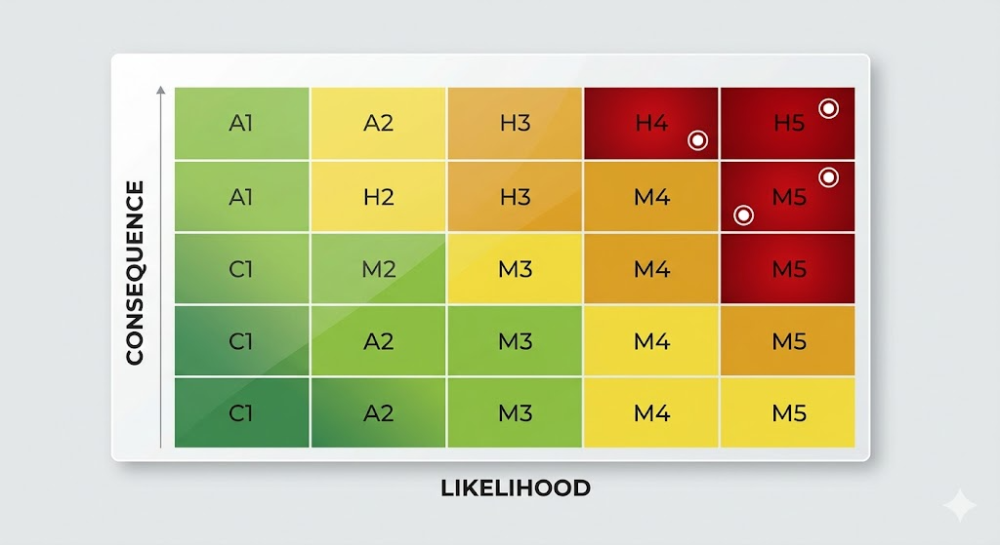

Clarity before complexity
We focus on making risk easier to read first. Visual hierarchy, simple language, and consistent scoring help teams communicate faster.
Why it exists
Risk information is often technically complete but practically difficult to absorb. Tables are dense, formats vary between teams, and important signals can get buried in status language or inconsistent scoring.
RiskTrix was created to simplify that moment. Instead of asking people to decode a spreadsheet, it frames likelihood, consequence, and priority in a visual format that helps stakeholders see what matters first.
What guides the product
We focus on making risk easier to read first. Visual hierarchy, simple language, and consistent scoring help teams communicate faster.
The same matrix logic can support project reviews, leadership updates, governance conversations, and client-facing reporting.
The purpose is not decoration. RiskTrix is meant to help people identify priority areas, align quickly, and make better decisions.
How RiskTrix works
RiskTrix organises risk information around a structured likelihood and consequence matrix, turning separate entries into a heatmap that is easier to interpret at a glance.
That shift matters because visual structure changes the conversation. Instead of debating which row to read next, teams can immediately spot concentration, compare severity, and focus on the risks that need attention.
The result is a cleaner bridge between project detail and stakeholder understanding.

Where it fits
RiskTrix is intended for reviews, steering meetings, stakeholder updates, and internal reporting where fast comprehension matters.
It supports teams that already have the data but need a more credible way to present it. By making risk visible and structured, the tool helps people move from raw information to shared understanding with less friction.
Next step
We are building the product around practical reporting needs: a sharper matrix, a more consistent story, and a faster path from analysis to action.